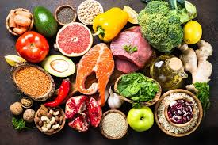
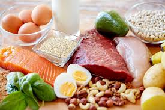

CONHECENDO OS ALIMENTOS:DO NATURAL AOS INDRUSTRIALIZADO
Os alimentos in natura são aqueles que vêm diretamente da natureza e não passam por processos industriais. Eles podem ser consumidos do jeito que são retirados das plantas ou dos animais, sem a adição de produtos químicos, corantes, conservantes ou muito açúcar e gordura. Esses alimentos são importantes porque possuem muitos nutrientes, vitaminas e minerais que ajudam no crescimento, dão energia e mantêm o corpo saudável. Frutas, verduras, legumes, ovos, leite e carnes frescas são exemplos de alimentos in natura. Consumir esse tipo de alimento diariamente ajuda a prevenir doenças e melhora a qualidade de vida. Os alimentos in natura vêm diretamente da natureza, como das plantas e dos animais, sem passar por muitos processos industriais. Eles são retirados da agricultura, da pecuária, da pesca ou do extrativismo e chegam ao consumo quase do mesmo jeito em que foram encontrados na natureza. Exemplos: Frutas vêm das árvores e plantas. Verduras e legumes vêm das hortas e plantações. Leite vem das vacas. Ovos vêm das galinhas. Peixes vêm dos rios, mares e lagos. Esses alimentos são considerados mais saudáveis porque normalmente não possuem corantes, conservantes ou muitos ingredientes artificiais. Os alimentos in natura são importantes para a saúde porque são ricos em nutrientes naturais, como vitaminas, minerais, fibras e proteínas, que ajudam o corpo a funcionar corretamente. Eles contribuem para o crescimento, fortalecem os ossos e músculos e ajudam a manter o organismo saudável. Além disso, esses alimentos ajudam a prevenir doenças, melhorar a imunidade e dar mais energia para as atividades do dia a dia. Como possuem pouca ou nenhuma adição de produtos químicos, também são considerados mais saudáveis para o consumo.


